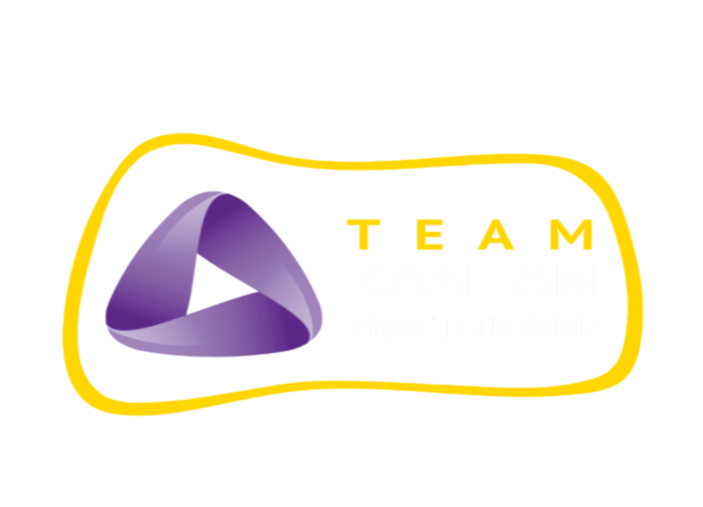
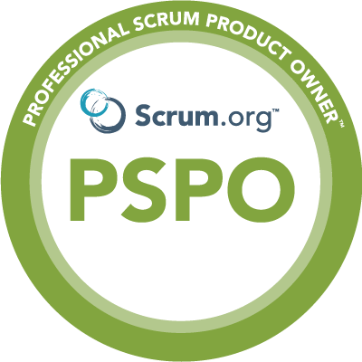

Experiência profissional:
Durante minha carreira, tive a oportunidade de atuar em alguns projetos de software,
nos quais puder exercer 2 papéis: QA (Quality Assurance) e PO (Product Owner).
Atuando nesse papel, eu era responsável por:
- Mapear e executar testes manuais (funcionais, smoke, regressivos, dentre
outros) nas aplicações dos clientes;
- Participar de reuniões de entendimento para aprender sobre as regras de
negócio;
- Automatizar os testes das principais funcionalidades dos sistemas para
identificar erros mais rapidamente, evitando custos para os clientes.
Atuando nesse papel, eu era responsável por:
- Refinar e preparar o backlog do produto, visando implementações futuras;
- Interagir com os stakeholders (partes interessadas) para entender melhor
as necessidades e expectativas dos clientes;
- Escrever histórias de usuário e casos de uso utilizando Gherkin (Given,
When, Then) para detalhar os critérios de aceite das demandas tendo em vista o comportamento
do usuário;
- Esclarecer dúvidas de negócio por parte do time técnico;
- Sugerir melhorias para o produto, além de acompanhar as tendências do
mercado (benchmarking).
Algumas certificações que conquistei até o
momento:

-
Team Kanban Practitioner (TKP)
- Instituição: Kanban University
- Certificado em: 05/2021
- Principais conhecimentos obtidos:
- O que é o método Kanban;
- Principais métricas do Kanban;
- Como aplicar esse método na prática para organizar processos;

-
Professional Scrum Product Owner I (PSPO I)
- Instituição: Scrum.Org
- Certificado em: 09/2022
- Principais conhecimentos obtidos:
- Conceitos e fundamentos do método Scrum;
- Quais são as principais responsabilidades do Product Owner;
- Como maximizar o valor do produto para o negócio;